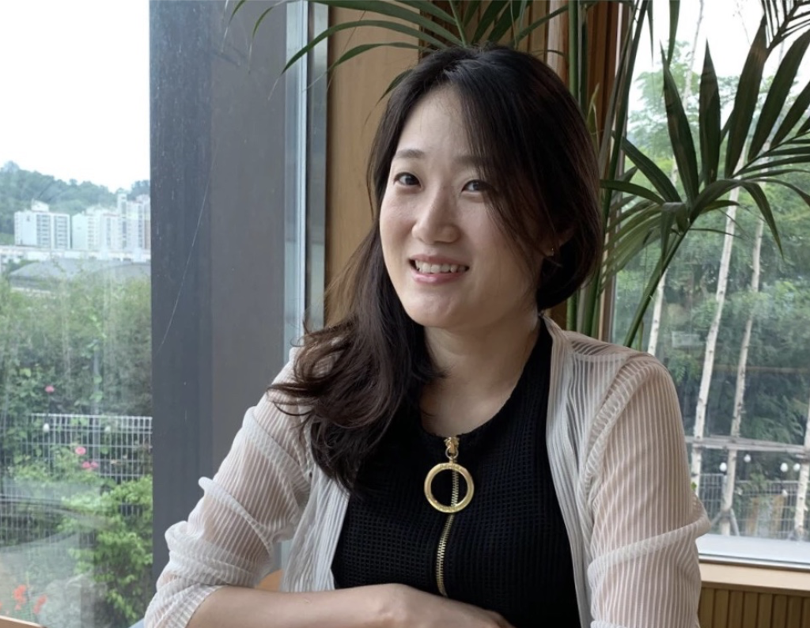
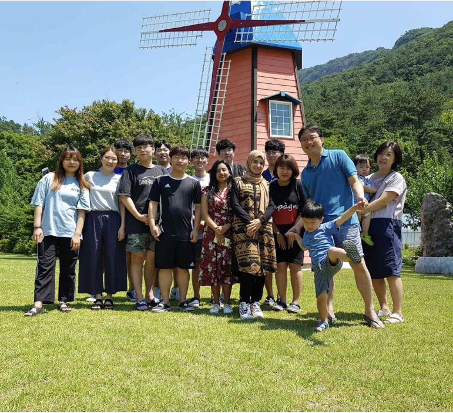

'HCI 연구실 산책'은 한국HCI학회에서 젊은 교수님, 흥미로운 연구를 하는 교수님을
인터뷰하는 뉴스레터입니다.
매주 새로운 연구실 산책을 통해 오늘의 연구를 확인하세요.
HCI 연구실을 소개합니다. #1 | 오유란 교수님 |

|
|
진학에 관심있는 학생들에게 우리 랩을 설명하자면? | 저희 연구실은 이화여자대학교 인공지능,소프트웨어학부 컴퓨터공학전공에 소속되어 있습니다. 주로 사람의 신체적 또는 인지적 한계를 보완 또는 증강하기 위해 혼합현실, 감성컴퓨팅과 |
|
|
이화여자대학교 HCIL@EHWA 오유란 교수 |
|
HCI 연구실을 소개합니다. #2 | 김승준 교수님 |

|
|
진학에 관심있는 학생들에게 우리 랩을 설명하자면? | GIST 인간중심 지능형 시스템 (Human-Centered Intelligent Systems) 연구실은 인간-컴퓨터 상호작용과 인공지능 기술을 융합하여 인간과 미래 컴퓨팅 시스템의 인터랙션을 '사람중심'으로 설계하고 실증하는 학제간 융합연구를 수행합니다. |
|
|
GIST 인간중심지능형시스템 연구실 김승준 교수 |